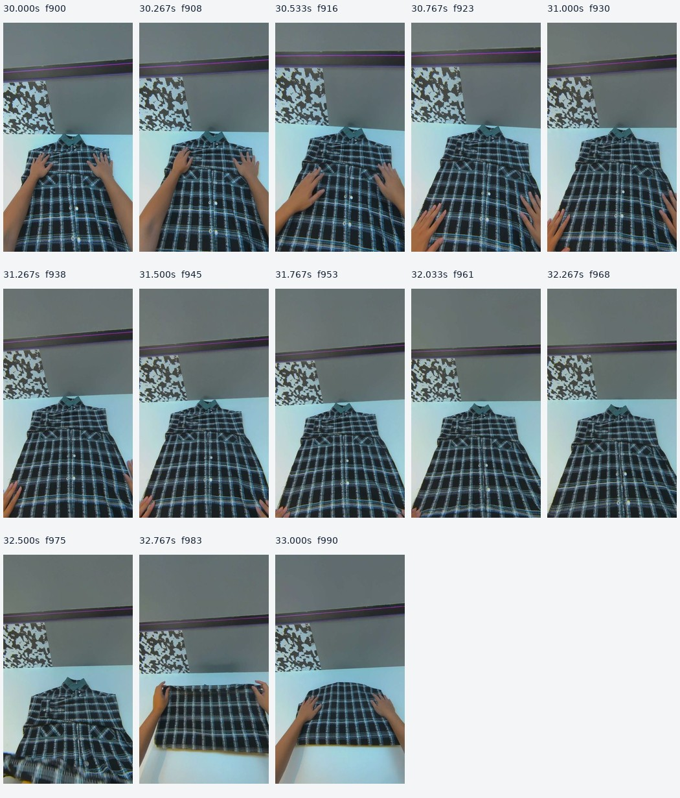
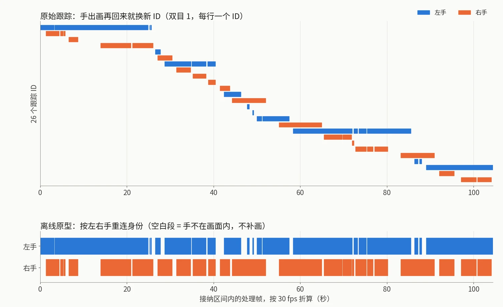

Ego Data Pipeline
我把第一视角录制自动处理成带动作标注和手部三维关键点的数据集。Qwen 先给动作候选，审理按整条记录核对，证据不足时才回看疑点附近的图像；每个结果都能追回源帧。
- 做什么
- 多相机第一视角录制 → 动作区间、手部三维关键点、导出包和 Viewer 回放
- 我做的
- 采样与分窗、Qwen 动作分段与审理规则、双目手部三角化、导出发布，以及按阶段回执续跑
- 技术栈
- MCAP · Qwen3.5-9B · WiLoR/MANO · 双目三角化 · Python 常驻服务 · 多 GPU 调度
- 规模
- 11 月 17 日 Viewer 累计 1,138 条录制、17,336 个 episode（前一天为 1,089 / 16,433）
- 难点与解决
- 模型分段随措辞摆动。我让文本审理把相邻窗口拼回整条记录核对，只在证据不足的疑点请求额外图像，并保留父候选 ID 以便追溯。
- 目前进展
- 叠衣服持续自动运行；叠杯子 1,643 条录制已登记，首批 2 条录制、11 个 episode 已发布。
方法一览
- 前段NAS 下载 → CPU 解码采样 → Qwen 给动作候选
- 审理整条文本审理 → 疑点按需看图 → 接纳 episode
- 下游手部 2D/3D → 导出 → 对象存储 → Viewer 发布
| 方法 | 怎么工作 | 输入 / 条件 | 出处 |
|---|---|---|---|
| Qwen3.5-9B | 开源视觉语言模型：看一组图像，按提示词输出结构化 JSON（动作名、起止帧、证据帧、疑点） | 每 3 秒窗口约 7 张 544×960 JPEG；FP16，单张 24 GiB 显卡放一份模型（参数约 17.5 GiB） | Qwen 开源模型 |
| 文本审理 | 固定版本的大语言模型按规则文档（skill）读整条录制的全部候选，检查任务边界、动作顺序和完成条件，输出接纳 / 待复核 | 只读 Qwen 的文字输出，不看图 | 自写规则 |
| 按需图像复核 | 同一模型只看疑点半开区间内的真实采样图，可拆分、合并候选或标为待审理 | 疑点范围；没有提示帧时确定性取首、中、末三张 | 自写规则 |
| WiLoR | Transformer 手部重建模型，从手部裁图回归 MANO 参数，得到 21 个关键点的 2D 和局部 3D | 扩大 2 倍的手框，仿射裁成 256×256；FP32 | Potamias 等，CVPR 2025 |
| MANO | 参数化手部网格模型：少量姿态 / 形状参数生成整只手的网格和关节 | WiLoR 输出的参数 | Romero 等，2017 |
| MediaPipe HandLandmarker | 轻量手部关键点模型，这里只当独立的左右手参照 | 每相机每 10 帧调用一次 | MediaPipe 开源 |
| 双目三角化 | 同一时刻左右目的 2D 关键点去畸变后，用标定外参求三维点 | 两路采集时间差 ≤ 1 ms；真实内外参 | — |
| 动态规划手性平滑 | 在半秒窗口里综合检测、几何和独立参照的证据，求左右手标签序列的最优解，抑制左右来回翻 | 单佩戴者、同时可见的两只手应异侧；证据不足保留 unknown | — |
| One Euro 滤波 | 截止频率随速度自适应的低通：慢时去抖，快时少滞后；正反向各跑一遍 | 连续的 2D 轨迹；帧间隔超过 1.5 倍时断开，不补造 | Casiez 等，2012 |
本页的 episode 指一次完整任务循环（例如叠好一件衣服），是数据集的基本单元；Take 指一次录制，一条 Take 通常含多个 episode。MCAP 是带索引的多话题日志格式，录制的原始数据就是 MCAP。
按源时间戳采样
录制从 NAS（网络存储）进入，按源内容哈希查重，已发布的来源直接跳过。采样以参考相机的源时间戳为准：从首个 header 时间起按 3 秒半开窗口 [t, t+3) 切分，每 0.5 秒取不早于目标时间的第一个实际解码帧，再补窗口末帧并去重，末尾不足 3 秒的窗口也保留。每张图都能回查源帧号和时间。
- MCAP按参考相机源时间解码
- 取样3 秒分窗，0.5 秒取帧
- 模型输入图像、窗口和源帧映射


输入分辨率与提示词：试过的替代方案
为了提速，我试过把图缩到 384×672（每窗视觉 token 从 3,570 降到 1,764）并同时缩短提示词。三个历史窗口的对照：
| 配置 | 窗口 0 | 窗口 10 | 窗口 20 | 三窗重复请求耗时 |
|---|---|---|---|---|
| 544×960 + 完整提示词（原配置） | 2 段 | 1 段 | 2 段 | 28.708 s |
| 384×672 + 短提示词 | 2 段 | 0 段（漏动作） | 0 段（漏动作） | — |
| 384×672 + 完整提示词 | 2 段 | 1 段 | 2 段 | 25.003 s（−12.9%） |
短提示词版本在窗口 10、20 输出空数组，画面里却明确有抚平、折叠和折袖，低耗时来自“什么都没说”。恢复完整提示词后边界、证据帧与原结果一致。只验证了三个窗口，生产仍用 544×960。
动作分段与证据复核
Qwen 对每个窗口给出动作候选，窗口之间互不知情。文本审理把相邻窗口拼回整条记录，检查任务边界、动作顺序和完成条件；证据不足时才请求疑点范围内的采样图，可以拆分、合并或记为待审理，并在输出里保留父候选 ID（source_episode_ids）。
- 时间约束
- 用源帧半开区间检查重叠与越界，保留真实短动作和显式留白（允许 episode 内部有不命名的空档）。
- 异常恢复
- 局部错误独立记录，其余合格 episode 继续；网络或服务容量这类暂态失败按 60 / 300 秒最多再试两次。恢复按阶段回执复用已通过的结果。
- 实录抽查
- 一条录制 13 个窗口、88 张图；两个疑点额外复核 14 张图，最终接纳 1 个 episode，含 7 个命名动作与 3 段留白。
叠杯子：审理规则怎么迭代
接入叠杯子时，我用 5 条 5–8 分钟的录制（Qwen 630 个窗口全部有效；另 1 条源文件首个数据块损坏、0 条消息可读）迭代审理方法。每个循环约 60 秒：搭成 10 杯 4-3-2-1 金字塔再拆回。Qwen 把“搭塔”和“套回”都叫 stacking，需要靠循环阶段区分。
| 轮次 | 方法改动 | 接纳 / 延后 |
|---|---|---|
| 1 | 初版动作词表 | 2 / 8 |
| 2 | 要求循环之间的静止片段有归属 | 3 / 6 |
| 3 | 写明静止片段必须被候选引用（落在区间内不算） | 24 / 3 |
| 4 | 新增组合动作“拆塔套回” | 6 / 0 |
| 5 | 新增组合动作“分杯排底” | 14 / 13 |
| 6 | 组合动作作为默认解读；图像复核必须引用、起点必须在采样帧上 | 27 / 0 |
第 6 轮 27 个 episode 时长中位 61 秒（42–90 秒），共 236 个动作；仍有 22% 的 episode 时长未标注，主要在拆塔第一个杯子落桌之后。第 5 轮退步的原因是文本审理为确认“中途是否落桌”把全部候选升级成图像复核，图像复核又产生了空引用和不在采样帧上的起点。
Qwen 双输入：吞吐换来的质量差异
一张卡只放得下一份模型，我让它一次处理两条录制的窗口（batch = 2），短录制交接后立刻补位。三条完整录制（326.4 秒、111 个窗口）的隔离对照：
| 口径 | 单输入 | 双输入 |
|---|---|---|
| 处理时钟（含采样） | 1,285.93 s | 1,002.86 s（吞吐 +28.2%） |
| 折算原始数据处理量 | 15.23 分钟/小时 | 19.53 分钟/小时 |
| 动作名、范围、证据帧一致的窗口 | 111 / 111 | |
| token 和解析内容完全一致的窗口 | 107 / 111 | |
不一致的一处是“与下一窗口连续”的标记丢了一条。下游文本审理两版都得到同样的 4 个 episode 边界，但图像复核发现：双输入版把一段可见的展开衣物标成了“抚平”。这不能算语义等价；收益与这个已知差异一起交给负责人决定，确认接受后才接入生产。
多视角手部
头部三路相机（一路单目 + 一对双目）逐帧检测和跟踪手，每只手按左、右两种假设分别过 WiLoR；全部帧推理完后，再离线读真实内外参，按同一相机时钟在 1 ms 内配对双目帧，用重投影几何决定左右手和跨视角身份。
| 检查 | 门限 |
|---|---|
| 双目帧时间差 | ≤ 1 ms |
| 通过的关键点（含腕点） | ≥ 15 / 21 |
| 深度 | 0.05–2 m |
| 两路回投影误差 | ≤ 6 px |
| 骨段长度 | 约 4–130 mm |
| 相邻帧关节速度 | ≤ 5 m/s |
- 同步从已知来源时间一对一配帧
- 三角化两路去畸变观测和相机外参
- 核验双路回投影与骨长检验
手部阶段的耗时在哪
两条 23 分钟的长录制各有约 12.3 万张相机帧，以约 4 帧/秒推理需要 8 个半小时以上。我对三个生产任务做了非阻塞采样（共 2,694 个主线程样本），按步骤归属墙钟时间：
- 姿态模型（ViT 主干、MANO 及其他）
- 54.5%
- 图像预处理（高斯滤波、裁剪、旋转拷贝）
- 22.9%
- 手部检测（含两个方向）
- 13.3%
- 独立左右手参照
- 4.5%
- MCAP 读取、反序列化、解码
- 2.5%
- 搬运、跟踪及其他
- 2.3%
| 改动 | 之前 | 之后 | 结论 |
|---|---|---|---|
| 同卡双进程（两份固定 539 帧工作） | 串行 344.64 s | 并行 225.27 s | 吞吐 1.53 倍，轨迹对照一致 |
| 同一张图的左右手请求复用高斯滤波（FP32） | — | −10.7% / −15.5% | 两段 898 帧，输出差异在重复运行的噪声内 |
| AMP 混合精度（FP16 推理） | — | — | 改变了双目观测结果，没有采用 |
| 每两帧的姿态候选汇成一批 | — | 吞吐 +11.4% | 离散判定一致，数值差超出重复运行范围；已接入生产 |
轨迹断点：原因是手出了画
手部轨迹经常断开、换 ID。抽查一条叠衣服录制（3,138 帧，104 秒）：单侧手缺失的缺口中 88% 两端的框贴着画面边缘，66% 的缺失帧三个相机都看不到这只手；被检测阈值、去重或数量上限丢掉的不到 2%。跟踪器 0.5 秒没匹配就放弃，手每次出画再回来都会新建 ID。


| 录制 · 相机 | ID 数 前 → 后 | 画外缺口 / 帧 | 画内缺口 / 帧 | 插值帧 |
|---|---|---|---|---|
| 104 秒 · 单目 | 24 → 3 | 45 / 1,031 | 12 / 25 | 25 |
| 104 秒 · 双目 1 | 26 → 2 | 54 / 1,029 | 1 / 60 | 0 |
| 104 秒 · 双目 2 | 27 → 2 | 52 / 1,027 | 1 / 9 | 9 |
| 36 秒 · 单目 | 11 → 2 | 17 / 316 | 0 | 0 |
| 36 秒 · 双目 1 | 9 → 5 | 13 / 241 | 1 / 15 | 0 |
| 36 秒 · 双目 2 | 8 → 4 | 25 / 268 | 1 / 15 | 0 |
插值的增益很小（单目双手同时可见的比例 67.7% → 68.3%），因为缺失主要在画外。同一次检查还发现单目相机的模型 3D 深度中位约 21 米：它用的是 WiLoR 的虚拟焦距而不是真实内参，所以单目 3D 不可用，三维只认双目三角化的结果。
交付与吞吐
导出包保留分集 MCAP、源帧映射、关键点、有效性掩码、审理依据和三路预览。Viewer 并排回放各相机，在同一时间线查看手部叠加和动作。
| 阶段 | 工作量 | 耗时 |
|---|---|---|
| Qwen 生成 | 13 窗、88 张图 | 103.6 s |
| 文本审理 | 整条候选 | 80.3 s |
| 按需图像复核 | 2 个疑点、14 张图 | 95.5 s |
| 手部 | 三路共 3,018 帧 | 775.4 s |
| 导出 | 分集 MCAP、映射、手部数据、三路预览 | 44.2 s |
| 上传与发布 | 9 个对象，100.6 MB | — |
回读验收：三路视频可播放，播放到约 18 秒时手部叠加和动作随画面推进；935 个参考帧至少有一个有效 2D 点，867 个帧有有效双目 3D 点，无效点全部为零值且掩码为 0，没有插值补齐。
持续运行的吞吐
| 阶段 | 基线 5 小时 44 分 | 双进程上线前后的完整一小时 |
|---|---|---|
| Qwen 完成（原始录制） | 11.66 | 14.09 |
| 审理形成 episode | 8.82 | 11.58 |
| 手部 | 6.96 | 10.00 |
| 导出 | 6.62 | 10.00 |
| 上传 + Viewer 正式发布 | 6.62 | 8.25 |
| 改动 | 之前 | 之后 |
|---|---|---|
| 标定附件去重：每集只存起点有效的 CameraInfo/TF 和区间内真实变化 | 导出 576.4 s，产物 2.504 GB | 489.2 s，0.164 GB |
| 三相机一次扫描 + 预览解码器跨集复用（同一条 4 集录制） | 489.2 s | 140.7 s |
| 重新导出积压的 4 条大包 | 待上传 44.35 GB | 2.156 GB（−95.1%） |
| 上传双并发（同一组 6 个对象，各两轮） | 单并发平均 151.4 s | 102.4 s（−32.4%） |
| Viewer 目录按数据库版本缓存、缩略图按可见区域渲染 | 首页容器内 20.88 s，公网约 25 s 无首字节 | 公网 0.41–1.18 s |
局限与下一步
- 手部轨迹断点多。按左右手重连身份的原型能把每路 24–27 个 ID 降到 2–3 个，还没进生产；画内真实漏检集中在抓布、手指被遮挡时，调阈值没用，需要更强的检测器或跨相机补充。
- 模型输出随措辞摆动。叠杯子继续改提示词的收益已经递减；首批 7 条生产录制接纳 97 个 episode，留白仍占 23.2%，上塔类指令也偏笼统（Qwen 原文缺层数和杯数）。
- 手部是瓶颈。姿态模型占一半以上时间，长录制单条要 8 小时以上；双进程之后的端到端提速还没有足够的完整发布样本来量化。